Decisions
The calls that are yours. Each has my recommendation first and the alternative after it. The sections below hold the evidence.
-
Where does the single Experimental label sit in the app?
- Recommend
- At the top left of the open view, above the chart. It is the same place for a chart and for the RBQM tab, it is the easiest thing to tap on a phone, and its detail opens in the page instead of floating over it.
- Or
- Beside the open chart's name in the header. It costs no height, but it is a small target, it scrolls sideways with the chart names on a phone, and it lands in two different rows depending on the view.
-
What happens to the amber banner that a chart draws inside itself?
- Recommend
- The page that hosts a chart shows the label once, and the chart stays quiet. A chart with no host around it, such as an R widget, shows the same small label itself. Today only one of the five experimental charts draws the banner at all.
- Or
- Keep the banner in every experimental chart and drop the label from the app and the docs pages.
-
Should each experimental chart say why it is experimental?
- Recommend
- Yes, one sentence each, kept beside the status in the site's settings file. Only the Time-to-Event Explorer has a written reason today. The Hepatic ALT Waterfall, Nephrotoxicity Explorer, Participant Profile, QT Safety Explorer and the RBQM tab need a sentence from you.
- Or
- Show only the general meaning of the word and add reasons later.
-
One R for the whole app now, or one presentation first?
- Recommend
- One presentation and one wording first, on the two copies of R the app starts today. That is a change to safety.viz alone. Then move to a single shared R as a second step: it needs a small bio.viz release and one real run to prove both workloads fit in one R.
- Or
- Wait and ship both together, so the reader never sees Start R twice.
-
Where does the Start R control live?
- Recommend
- At the top of any view that uses R, as the same strip in both places. For the biomarker charts that means it leaves the row of chart names.
- Or
- One control in the app header, visible from every tab. It makes most sense once there is a single shared R.
-
What colour are the hexes for Biomarkers and RBQM?
- Recommend
- Reuse two colours the app already has: amber for Biomarkers and pink for RBQM. No new colours, and the rainbow strip stays as it is. The costs: amber also marks a guessed column on the Data tab, and pink is the colour kept for charts outside the standard domains, which has no tab today.
- Or
- Add two new colours to the palette, or give Biomarkers the blue of the labs file it reads.
-
Should the RBQM file box stay closed by default?
- Recommend
- Yes, but say on its closed face that this is where your own files go, and keep it open after a drop so the reader sees what was recognised.
- Or
- Always show the drop area, at the cost of pushing the results down.
-
Two wider consistency items: worth their own piece of work?
- Recommend
- Yes to both, outside this polish pass. First, the same three treatment arms are drawn in three different colour sets across the app. Second, safety.viz chart names use capitals on every word and bio.viz names do not.
- Or
- Leave both; neither is new in this release.
1Standardise how R is loaded and run
The ask: map every place the app loads or runs R, then propose one pattern for the whole app.
What is there today
R runs in two places. They were built one release apart and share almost nothing the reader can see.
| Biomarkers tab (five bio.viz charts) | RBQM tab | |
|---|---|---|
| What R does | Works out the statistics line under a chart. Four of the five charts ask as soon as they draw; Group comparison asks once a biomarker is opened. | Runs gsm's workflows on the loaded study and returns the tables the charts draw. |
| Trigger | A Start R pill at the front of the row of chart names. | A Start R button in a box at the top of the tab. |
| What it downloads | R alone, about 13 MB, from webr.r-wasm.org. No packages. | R again, then 35 packages (about 40 MB) from repo.r-wasm.org, then gsm's four packages (about 2 MB) from the page. |
| Which R | bio.viz's own copy. | The app's own copy. A second, separate R. |
| Before the press | Pill plus "About 13 MB, once". The full sentence is in the chart's statistics line, below the chart. | One long sentence beside the button. |
| While it loads | Pill greys to "Starting R…". The statistics line says "waiting for R…". No steps, no clock. | Button greys to "Starting R…", then "Running…". A sentence names each of six steps with seconds so far. The tab says "starting", then "running". |
| Once ready | A greyed "R started" pill stays in the row for good. | Button becomes "Run again"; the box reports the run. |
| If it fails | "Try R again" pill. The reason is in the statistics line, in plain ink, far from the pill. | "Try R again" button. The reason is beside it, in red. The tab says "no R". |
| Measured | 1.7 to 4.6 seconds to "R started"; first statistic at about 4.5 seconds. | 21 to 43 seconds to first results on the pilot study, 30 on the RBQM study. Up to 28 of those seconds sit in one step. |
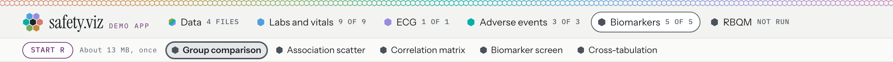
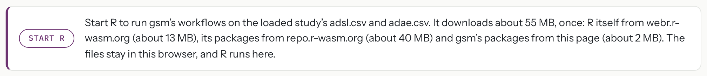
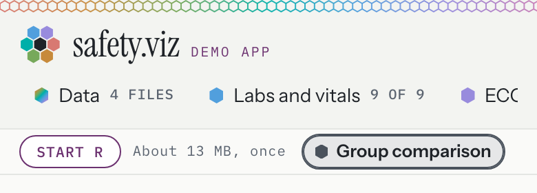
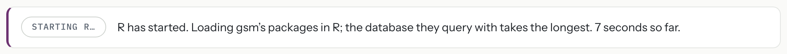
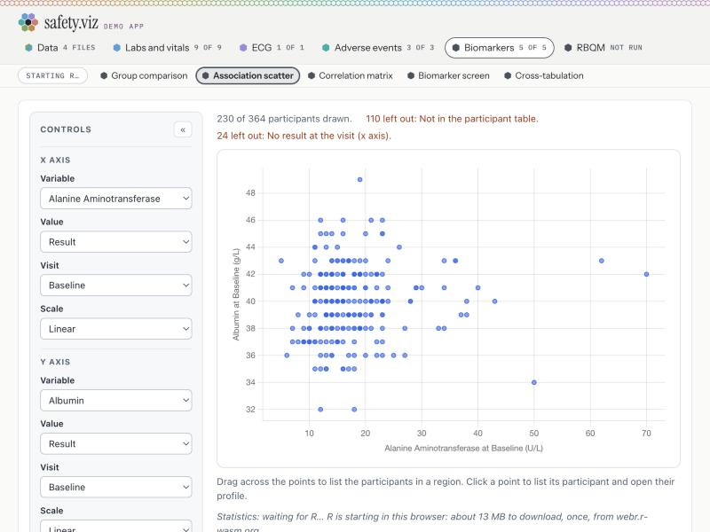
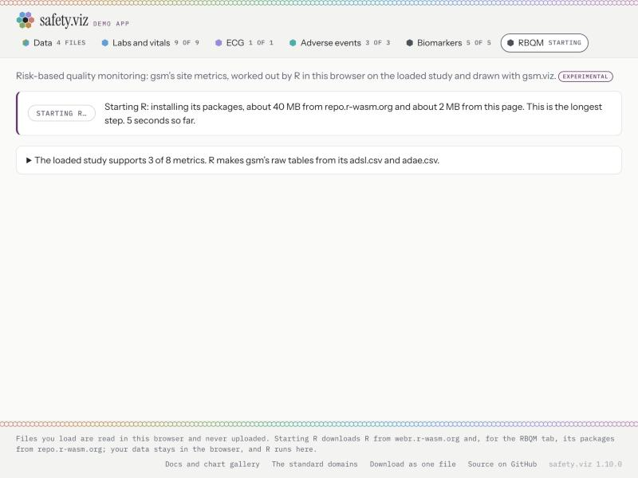
What is inconsistent or wrong
- Two copies of R. Starting R for a biomarker chart does not start it for RBQM: one place says "R started" while the other still says "Start R". On one load the page made two R workers and asked for the 12.3 MB R file twice.
Where: bio.viz starts its own,
site/vendor/bio.viz/bio.viz.js:255-284; the app starts another,src/app/r-browser.js:159-174, made insrc/app/rbqm-view.js:286-295. - Two homes for the control. One is in the header's row of chart names, the other inside the view. On a phone the biomarker pill and its hint take about half of that row.
Where:
src/app/page.js:414-421and477-497;src/app/rbqm-view.js:656-662. - Two button styles for the same action, close but not the same size.
Where:
src/app/styles.js:82-85against90and106-107. - Two wordings for the same promise. One says "the study's data stays in this browser", the other "The files stay in this browser, and R runs here."
Where:
src/app/r-on-request.js:43-46;src/app/rbqm.js:69-75. - Progress is shown in one place and not the other. Neither shows a list of steps, so a reader cannot see how far along it is.
Where:
src/app/r-on-request.js:96-105;src/app/rbqm.js:92-106. - Two steps each claim to be the slowest. One sentence ends "This is the longest step." and a later one says "takes the longest". In my runs the later one was the slow one.
Where:
src/app/rbqm.js:98and102. - Failures read differently and both leak the browser's own error text. The biomarker one also stacks two prefixes: "R did not start: Statistics are unavailable: R could not be started (Failed to fetch dynamically imported module: …)".
Where:
src/app/r-on-request.js:47-51wraps bio.viz's sentence frombio.viz.js:429-431;src/app/rbqm.js:114-119; red text only insrc/app/styles.js:109. - The ready state is a dead control in one place. "R started" is a disabled pill that never leaves the row of chart names.
Where:
src/app/r-on-request.js:99-104. - The release notes say starting R for RBQM "takes a minute or two". I measured 21 to 43 seconds. Worth restating once it is measured on a slow connection.
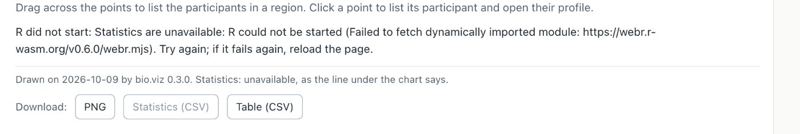
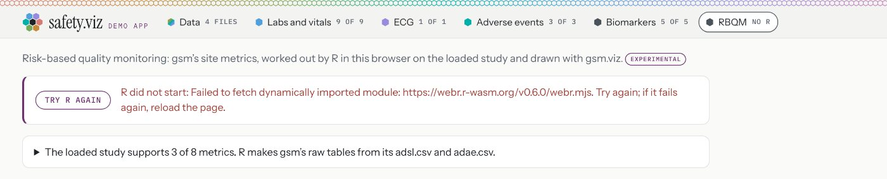
The proposed pattern
- One trigger model: R on request, as now. Nothing downloads until the reader presses Start R.
- One component, the R strip, at the top of any view that uses R. Same button, same layout, same four states.
- One wording, built from one template:
- Off: "R runs in this browser. Starting it downloads about N MB once, from (hosts). Your data stays here."
- Starting: a short list of steps that tick off, with seconds so far. No progress bar, because the app does not know the bytes.
- Ready: "R is ready", with R's version. In RBQM the button becomes Run again and the result follows.
- Failed: "R did not start", a plain reason, Try again beside it, and the browser's own words behind a "What the browser said" line.
- The statistics line under a biomarker chart shortens to "Statistics need R. Start R at the top of this chart." The app already writes that sentence, so bio.viz does not change.
- Tabs keep saying their state in a word or two, in both places or neither. I suggest neither for Biomarkers, since its tab counts charts.
- One shared R, as the second step:
- It looks feasible from the code. bio.viz's connection already accepts an R engine handed to it.
- It is not free. bio.viz keeps the small piece of R it needs private, so bio.viz has to offer an engine that takes an R already running. That is a bio.viz release and a fresh copy here.
- It is unproven. Nobody has run the statistics file and gsm's packages in one R in a browser. Check memory, and check that their function names do not collide.
- Once shared, Start R anywhere means R is ready everywhere, and RBQM's first run only adds its packages.
Where: the engine hand-over is atbio.viz.js:326and344-352; the private R helper is atbio.viz.js:164and277.
Mockup: the standard R strip
Press Start R. Timings are shortened for the mock; the step names and megabytes are the real ones.
2One Experimental label for the whole app
The ask: one label, with the details on hover and on click. The tiers themselves are not in question: Prototype stays out of the app and uncounted, Experimental ships with a label, and both are set in the site's settings file.
What is there today
Four looks, three wordings, and no way to read the detail on a phone.
| Form | Where it appears | Detail |
|---|---|---|
| Orange pill in a page title | Docs site: gallery cards, and the demo, evidence, API and guide page of each experimental chart. Once more in a row of the kit page. | Hover only. |
| Tan pill, "Prototype" | Docs site: the Patient Journey Explorer's card and pages. | Hover only. |
| Amber banner inside the chart | Hepatic ALT Waterfall, everywhere it draws, including the app. One view of the Hepatic Explorer, with its own sentence. | Always-visible sentence. |
| Plum outline pill on a tab | App: the RBQM tab. Hidden between 761 and 1339 pixels wide. | Hover only. |
| Plum outline pill in a sentence | App: the end of the RBQM tab's opening line. | Hover only. |
| Nothing | App: Nephrotoxicity Explorer, Participant Profile, Time-to-Event Explorer and QT Safety Explorer. All four are experimental in the settings file and carry no mark in the app. | None. |
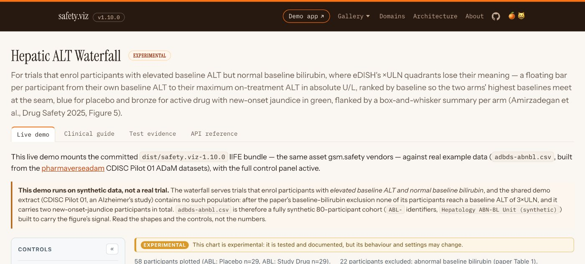
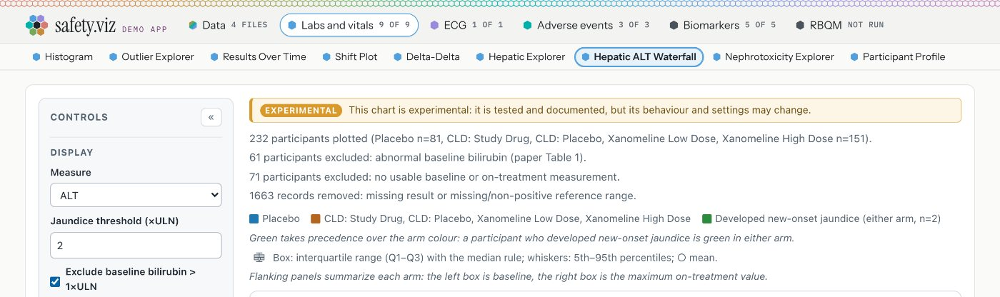
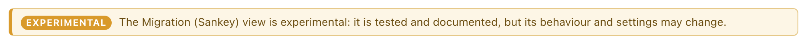
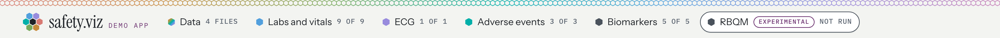
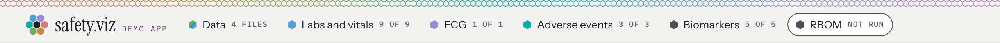
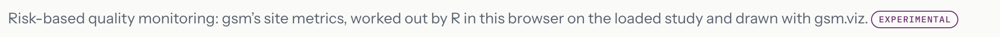
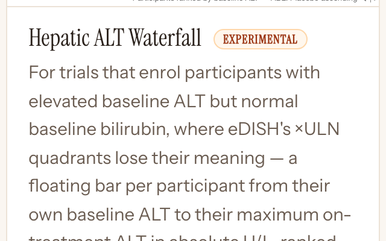
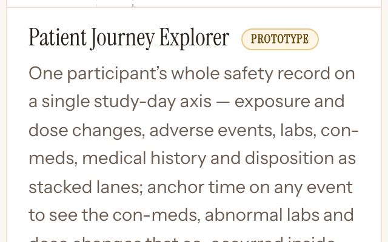
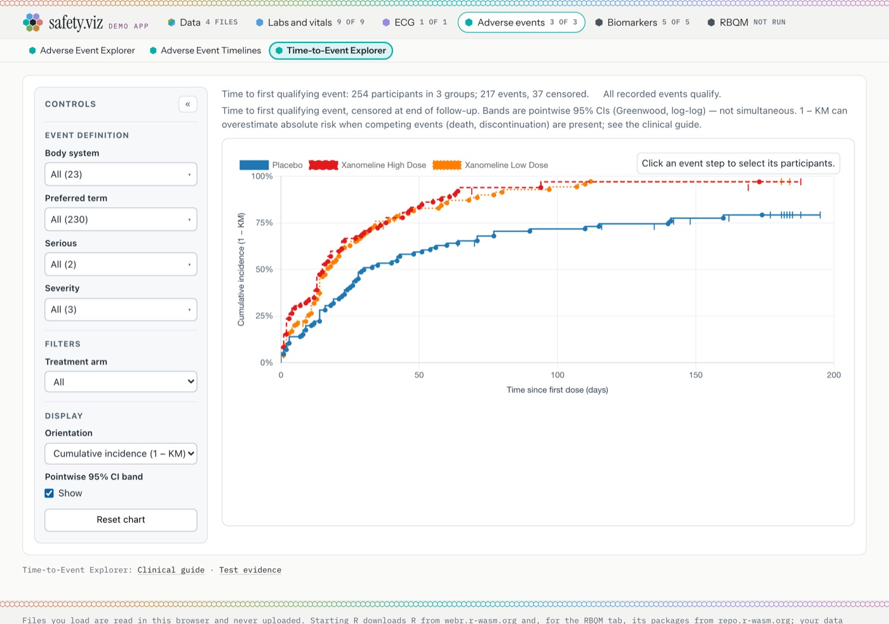
What is inconsistent or wrong
- In the app, four of the six experimental things carry no label. The standing rule is that Experimental ships with one.
Where: a chart's name in the header is built with no status at
src/app/page.js:348-361; the settings are atsite/config.json:76,91,106,121and170. - The in-chart banner is called by one chart and one view. The other four experimental charts never call it.
Where:
src/hep-waterfall.js:232;src/hep-explorer/views/migration.js:867-870; the banner issrc/shell.js:47-56, styled at241-243. - Three wordings for one meaning.
- Pills: "Still being worked on, and fine to use: its behaviour and settings may change."
- Banner: "This chart is experimental: it is tested and documented, but its behaviour and settings may change."
- The Hepatic Explorer's view has a third sentence of its own.
Where:scripts/app-libraries.mjs:120-121;src/shell.js:52-53;src/hep-explorer/views/migration.js:868-869. - Every pill explains itself through a hover tooltip. A phone has no hover, so on a phone the word is all there is.
Where:
scripts/site-lib.mjs:1523-1530;src/app/page.js:432-439;src/app/rbqm-view.js:651-655. - The RBQM tab's pill disappears at common laptop widths.
Where:
src/app/styles.js:216-218. - Why a chart is experimental is written down for one chart only, and only on the kit page.
Where:
scripts/site-lib.mjs:1296-1301. - Small things: the orange pill takes the serif face inside a title and the sans face elsewhere; a Prototype banner exists in the code and nothing calls it.
Where:
site/site.css:107-123sets no font;src/shell.js:63-71.
The proposed single label
- What it is: one small button that says "Experimental", with a caret to show it opens.
- What it does:
- Hover opens the detail on a desktop.
- A click or tap opens it and keeps it open, on any device.
- Escape, the close button or a second tap closes it. It is reachable by keyboard.
- Where it sits in the app: top left of the open view, above the chart, for charts and for the RBQM tab alike. Stable charts show nothing, so they lose no height.
- Where it sits on the docs site: after the chart's name, where the orange pill is now, on cards and page titles.
- What the detail holds, always in this order:
- The name: "Hepatic ALT Waterfall is experimental".
- The one meaning, in the pill's existing words.
- Why this one: a sentence written for the chart, from a new optional line beside its status in the settings file.
- Links to its clinical guide and test evidence, the same ones the footnote under the chart already has.
- A chart with one experimental view, such as the Hepatic Explorer, shows the same label beside that view's heading, inside the chart. The detail's "why" names the view.
- How Prototype relates: same label, same detail, different word and a dashed outline. It never appears in the app, because prototypes are not in the app. On the docs site its detail says "Not ready for production: on the docs site only, and not in the demo app."
- What goes away: the amber banner as a separate look, the pill inside the RBQM tab, the pill inside the RBQM sentence, the width rule that hides it, and every hover-only tooltip.
One thing to know before saying yes
The label has to live in the charts' shared shell so that a chart on its own can show it. A change there touches every chart's test evidence, so plan one evidence refresh for the piece.
Mockup: the label and its detail
Tap the label. Switch the view to see how each chart's own reason fits the same detail, and switch the placement to compare the two options in decision 1.
Patient Journey Explorer
Patient Journey Explorer is a prototype
Not ready for production: on the docs site only, and not in the demo app.
- Why this one
- A sentence from you. None is written down today.
Same shape, same detail, a different word and a dashed edge. The docs site keeps its own colours.
3Polish for the RBQM tab
The ask: he is happy with what it does, so no change to behaviour. Layout, spacing, hierarchy, type, tables, states, the upload path, wording and fit with the rest of the app.
What is there today
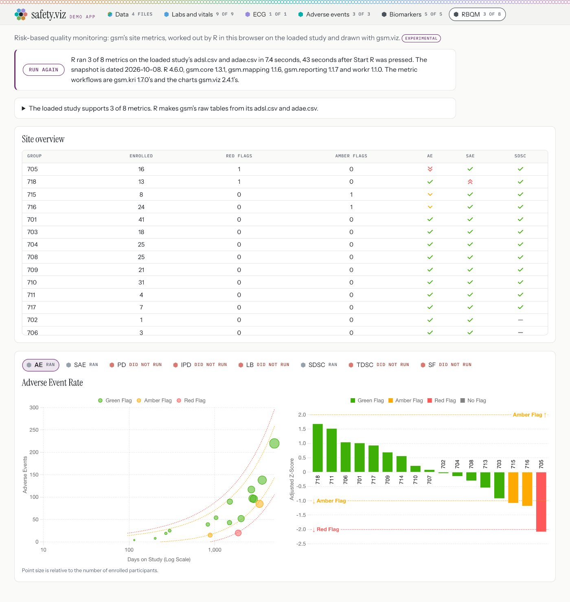
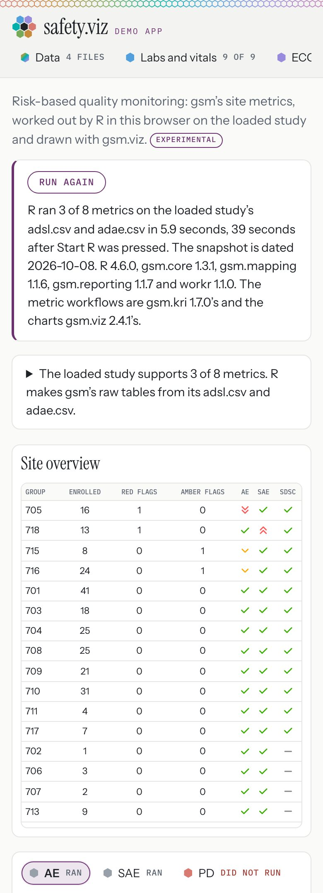
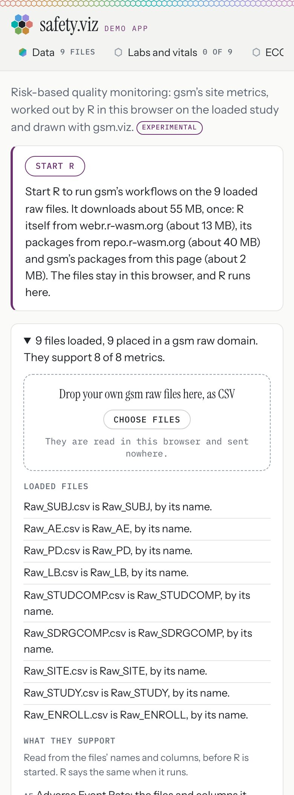
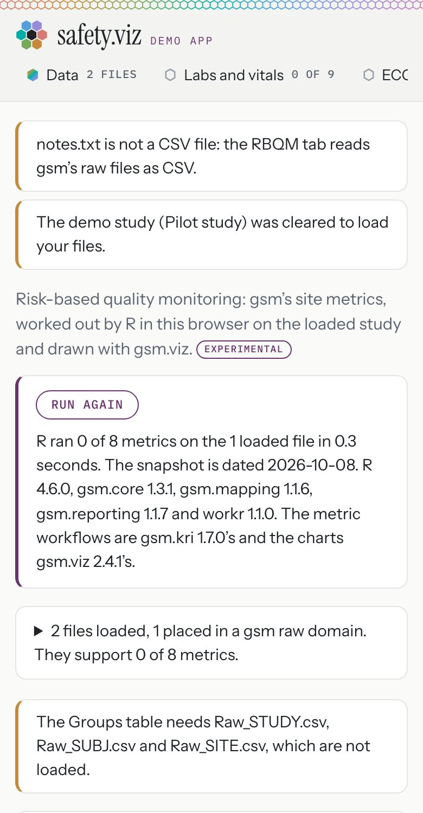
It works, it holds at 390 pixels, and it already uses the app's cards, type and pills. The items below are finish, in rough order of how much they show.
What needs a tweak, and the proposed change
Layout and alignment
- Two right edges. The opening line, the run box and the file box stop at a reading width while the two result cards run the full width, so the page has a step in it.
- Proposed: let the run box and the file box take the cards' width. Keep the reading width for the opening sentence only.
Where:src/app/styles.js:104,105and110against123. - Notes land in two places. Notes about a load sit above everything; notes from R sit between the file box and the results.
- Proposed: one place for both, directly under the run box.
Where:src/app/page.js:546;src/app/rbqm-view.js:409-413. - The scatter plot has a caption and the bar chart has none, so the two charts sit at different heights.
- Proposed: move the caption under the pair.
Where:src/app/rbqm-view.js:353-362.
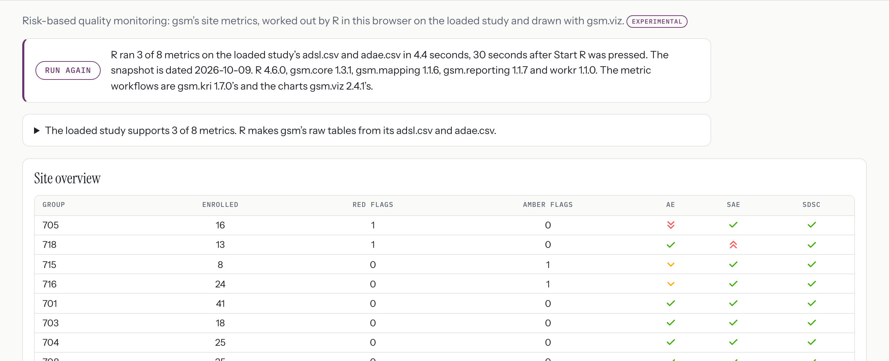
The run box
- One paragraph carries the result, two timings, a date, five R versions and two more versions. The result is the part the reader wants and it is not set apart.
- Proposed: a headline, "3 of 8 metrics ran on adsl.csv and adae.csv".
- Under it, a small line in the app's label face for the timing, the snapshot date and the versions.
Where: the sentence issrc/app/rbqm.js:223-247; it is placed atsrc/app/rbqm-view.js:656-667. - A failure turns the words red and leaves the box's edge plum. Everywhere else in the app a problem box has a red edge.
- Proposed: the box follows the app's problem style. The R strip in section 1 covers it.
Where:src/app/styles.js:95against105and109. - Two steps say they are the longest.
- Proposed: keep the claim on the step that loads gsm's packages, which is the slow one.
Where:src/app/rbqm.js:98and102.
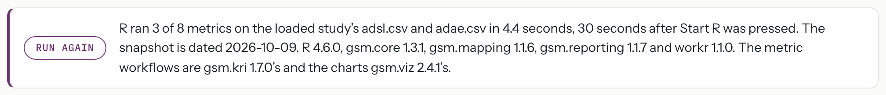
The site overview table
- The table is cut through the middle of a row, with no count and no sign that it scrolls. On the 150-site study it shows about 14 rows.
- Proposed: size the window to whole rows.
- Say how many sites there are beside the heading.
- Add a quiet line at the foot, "136 more, scroll the table".
- With 20 sites or fewer, show them all.
Where:src/app/styles.js:125; the heading issrc/app/rbqm-view.js:417. - On a desktop the number columns are centred and spread across the whole card, so a site's row is hard to follow across.
- Proposed: right-align the numbers and let the table take only the width it needs.
Where:src/app/styles.js:126-129. - On a phone the column headings are 8 pixels tall.
- Proposed: a floor of about 10 pixels, with "Red" and "Amber" for the two flag counts at that width.
Where:src/app/styles.js:219-224. - Choosing a cell opens that metric below, and nothing says so.
- Proposed: one line under the table, "Select a cell to open that metric below."
Where:src/app/rbqm-view.js:433-438. - Not confirmed: the first column is headed "Group" where a reader would expect "Site", and a cell's numbers show only on hover. Both come from gsm.viz. I did not check whether gsm.viz lets the app change either.
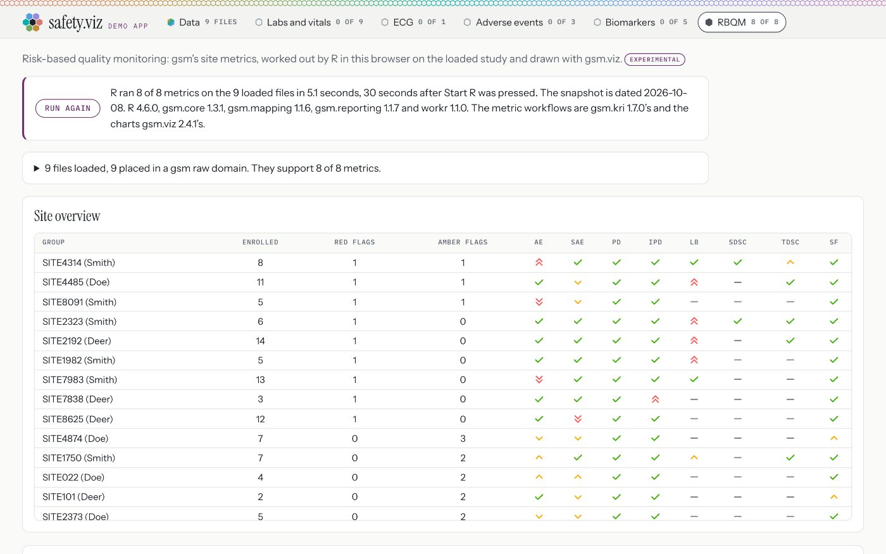
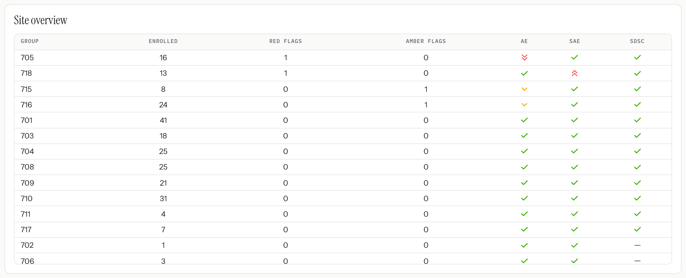
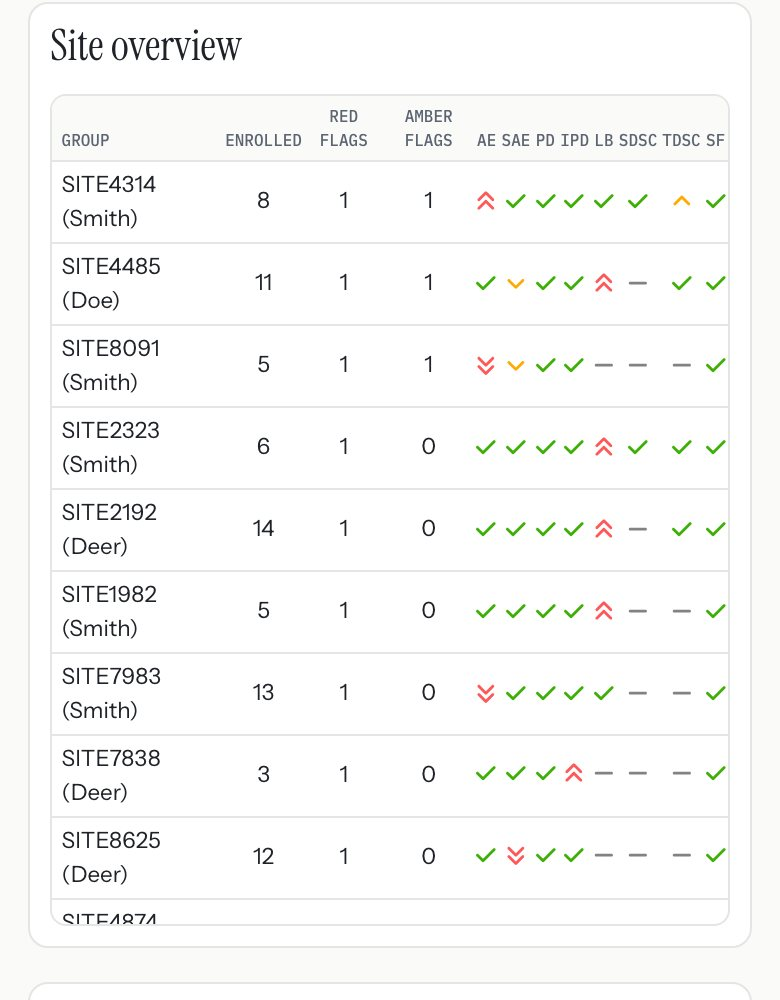
The metric buttons and charts
- The hex on a metric that ran is grey. Everywhere else in the app a ready thing wears its tab's colour, and grey means nothing to read.
- Proposed: the RBQM colour from decision 6, once the tab has one.
Where:src/app/rbqm-view.js:459; the grey is the fallback insrc/app/styles.js:59. - The two charts use gsm.viz's own type and its brighter flag colours. They read as a guest, which they are.
- Proposed: leave them. Not confirmed: whether gsm.viz would take the app's typeface if asked.
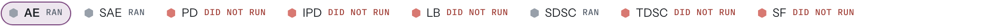
The file box and the upload path
- The way to use your own files is hidden. The closed box reads as a status sentence; nothing on it says files go here.
- Proposed: keep the sentence and add "Use your own gsm files" at its right, in the app's action style.
Where:src/app/rbqm-view.js:498-505;src/app/styles.js:110-112. - After a drop with R already running, the box closes. The line that says a file was not recognised, or lacks columns, is then out of sight.
- Proposed: keep the box open after a drop until the reader closes it.
Where:src/app/rbqm-view.js:502. - The lists are wordy. Nine lines read "Raw_SUBJ.csv is Raw_SUBJ, by its name." and eight end "the files and columns it needs are loaded."
- Proposed: two short columns for files, the file and the domain it was placed in.
- For metrics, the short name, the full name, and either a tick or what is missing.
- Keep the full sentence for the rows that have a problem.
Where:src/app/rbqm-view.js:556-596; the sentences are insrc/app/rbqm-files.js. - The drop area matches the Data tab's. Good; no change.
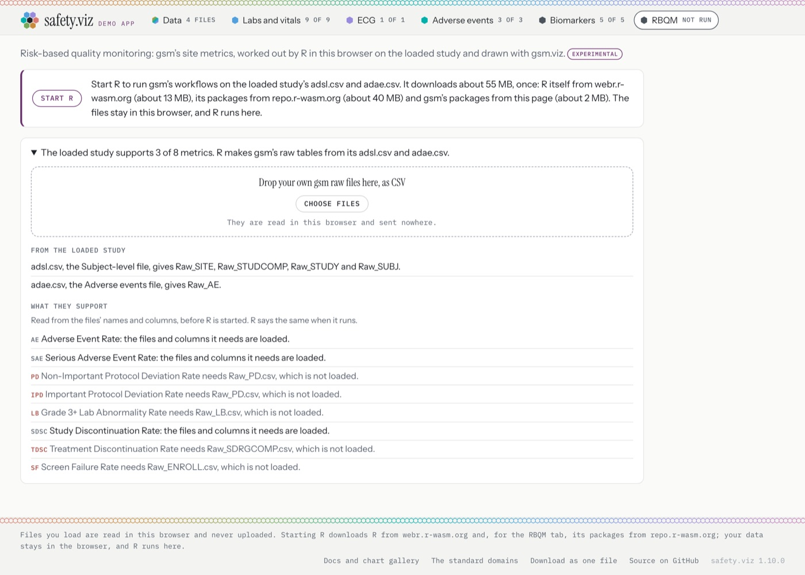
Empty, loading and error states
- Nothing loaded: a clear sentence, a disabled button, the file box open. Good; no change.
- Loading: covered by the R strip in section 1.
- No metric ran: "No metric ran, so there is no overview to draw." Good; no change.
- A metric that did not run: its own sentence in a red-edged box. Good; that box should also take the card's width.
Mockup: the top of the tab after these changes
Risk-based quality monitoring: gsm's site metrics, worked out by R in this browser on the loaded study and drawn with gsm.viz.
3 of 8 metrics ran on adsl.csv and adae.csv
Site overview 17 sites
| Site | Enrolled | Red | Amber | AE | SAE | SDSC |
|---|---|---|---|---|---|---|
| 705 | 16 | 1 | 0 | ▼▼ | ✓ | ✓ |
| 718 | 13 | 1 | 0 | ✓ | ▲▲ | ✓ |
| 715 | 8 | 0 | 1 | ▼ | ✓ | ✓ |
| 716 | 24 | 0 | 1 | ▼ | ✓ | ✓ |
| 701 | 41 | 0 | 0 | ✓ | ✓ | ✓ |
12 more, scroll the table
Select a cell to open that metric below.
4Other formatting, layout and navigation details
The ask: anything else across the demo page that needs a tweak, starting with the black hexes, and others of the same kind.
The black hexes
- What you see: the Biomarkers and RBQM tabs, and all five biomarker chart names, have a near-black hex. Every other tab has a colour.
- The cause: it is written that way. Any tab that comes from a second chart library is given one fixed colour, graphite, the centre hex of the logo. Biomarkers and RBQM are the only two such tabs, so both are graphite.
Where: the graphite is
--lib:#4a525catsrc/app/styles.js:47; it is applied to every such tab atsrc/app/styles.js:56; the rule that picks it ishueClassatsrc/app/libraries.js:323-325; the RBQM tab is given the same class atsrc/app/page.js:427. - The fix:
- Let each added tab name its own colour, and fall back to graphite only when it names none.
- Set the two colours where the app lists its added libraries, so bio.viz does not change.
- Put the same colour on the RBQM view, which also fixes the grey hexes on its metric buttons.
Touches:src/app/libraries.js,src/app/styles.js,src/app/page.js,scripts/app-libraries.mjs. Small.
today, both Biomarkers, amber RBQM, pink
Others of the same kind: things the newer tabs did not pick up
- No place on the docs site. The gallery, its menu and its count cover safety.viz's own charts only. A reader of the docs cannot tell that the app also has five biomarker charts and an RBQM tab.
- Proposed: a short "Also in the demo app" strip on the gallery page, one line each, linking into the app.
Where: the RBQM tab's title and one-line description sit unused atsite/config.json:6-13; only its status is read, atscripts/app-libraries.mjs:133-137. - No footnote under RBQM. Every chart ends with links to its guide and evidence; the RBQM tab ends with nothing.
- Proposed: the same footnote line, linking to gsm's own documentation and to the tab's test evidence.
Where: charts get it atsrc/app/page.js:572-573; a tab's view at543-562does not. - Chart names in two styles. "Outlier Explorer" and "Results Over Time" beside "Group comparison" and "Cross-tabulation".
- Decision 8. The names come from each library's own chart list.
- Treatment arms in three colour sets. The same three arms are blue, red and green in the QT Explorer; blue, red and orange in the Time-to-Event Explorer; and blue, green and orange in the biomarker charts.
- Decision 8. Each chart carries its own list of colours; there is no shared one.
Where:src/qt-explorer/getPlugins.js:15;src/time-to-event/getPlugins.js:19;site/vendor/bio.viz/bio.viz.js:3562.
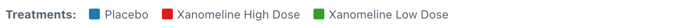
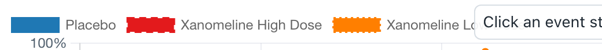
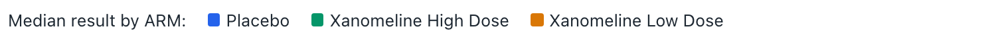
Navigation
- On a phone the open tab can be off screen. The tabs scroll sideways, and a link straight to RBQM opens with the strip at its start, so no tab looks open. The same holds for a chart far along its row.
- Proposed: after each draw, bring the open tab and the open chart name into view.
- Add a soft fade at the right edge of both rows so it is clear there is more.
Where: the tabs are rebuilt with no scroll step atsrc/app/page.js:366-443; the rows scroll fromsrc/app/styles.js:79and226-227. - Tap targets are 30 pixels tall on a phone, for tabs and chart names alike.
- Proposed: 40 pixels at phone width.
Where:src/app/styles.js:72and81. - The browser tab always reads "safety.viz demo", whichever view is open.
- Proposed: put the view's name first, such as "RBQM · safety.viz demo".
Where:scripts/site-lib.mjs:1667; the view changes inselectatsrc/app/page.js:1031-1037. - The only way from the app to the docs is a link in the footer. The docs header has a clear way in to the app.
- Proposed: make the wordmark a link to the docs home.
Where:src/app/page.js:272-279. - Two favicons: orange bars on the docs site, the seven-hex mark on the app.
- Proposed: the hex mark on both.
Where:site/shell.html:8-11;scripts/site-lib.mjs:1650and1668.
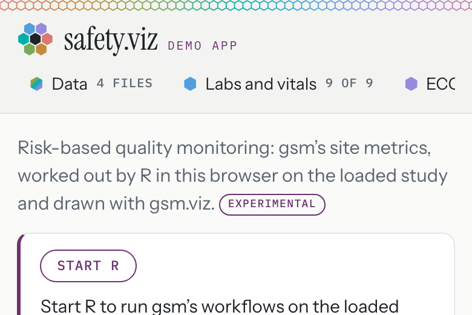
Holding at 390 pixels
- Demo app: every view holds except one. In the QT Explorer the table under the chart is 529 pixels wide in a 340 pixel space, and the whole page scrolls sideways.
- Proposed: let that table scroll inside its own box.
Where: the table is made atsrc/qt-explorer.js:829inside a box with no scroll, styled atsrc/qt-explorer.js:96. - Docs site: three pages run wider than the screen. The site hides sideways overflow, so the extra is cut off and cannot be reached.
- Any chart's API page: the "On this page" card.
- The QT Explorer's demo page: the same table.
- The Hepatic Explorer's demo page.
Where: the cut-off issite/site.css:72; the card issite/site.css:889.
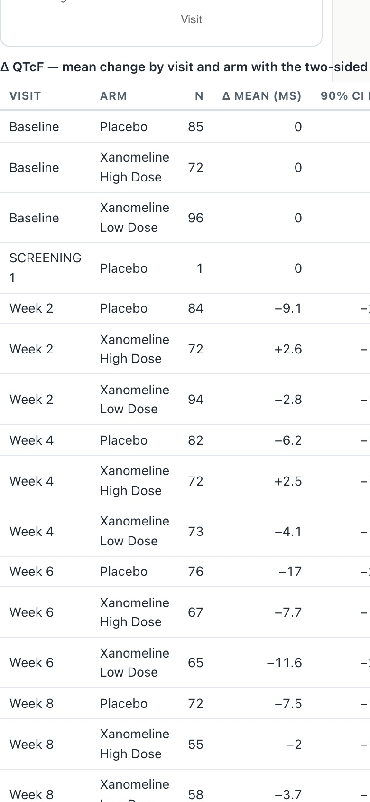
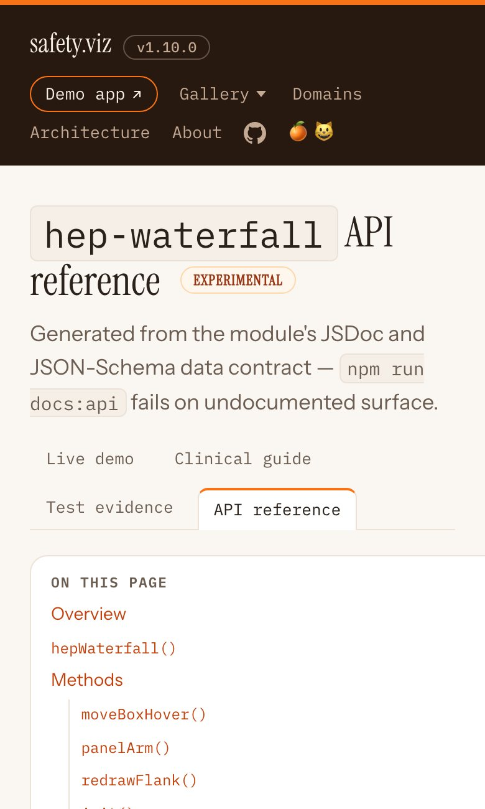
Small things
- The docs home page still describes itself to search engines as "Nine classic clinical-safety graphics". There are fourteen.
Where:
scripts/site.mjs:78. - Focus rings are plum on the app's own controls and blue inside the charts. Both are visible. No change proposed.
- Neither the app nor the docs site has a dark theme. That is consistent. No change proposed.
- The app and the docs site are two skins: paper, graphite and plum against espresso and orange. That reads as deliberate. No change proposed beyond the favicon.
Defects in the released app, as opposed to design
- Hepatic ALT Waterfall on the pilot study: the two arm titles above the chart print on top of each other, and the right-hand panel's title is squeezed until it cannot be read. The active arm's name is every non-placebo arm joined together, which is too long for the space.
Where: the title is set at
src/hep-waterfall.js:853. - QT Explorer at phone width: the sideways page scroll described above.
- Docs site at phone width: content cut off on the three pages described above.
- Console: starting R logs one error, "Refused to get unsafe header Content-Encoding", once per copy of R, and one warning about its message channel. Both come from the R runtime, not from the app, and nothing breaks. Not confirmed: the exact line in the runtime.
- No other console errors and no failed requests on any view, at either width.
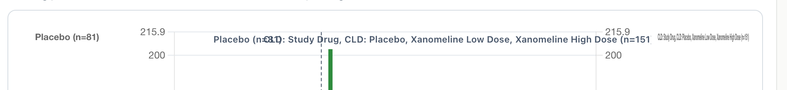
Every proposed change, quick wins first
One row each. Small is an hour or two with its tests; medium is a day or so; large is several days or reaches into another repository.
| Change | Files it touches | Size |
|---|---|---|
| Give Biomarkers and RBQM their own hex colour, and colour the RBQM metric buttons to match | src/app/libraries.js src/app/styles.js src/app/page.js scripts/app-libraries.mjs | small |
| Bring the open tab and chart name into view on a phone; fade the row's right edge | src/app/page.js src/app/styles.js | small |
| Correct the docs home page's "Nine classic" description | scripts/site.mjs | small |
| Only one RBQM step says it is the longest | src/app/rbqm.js | small |
| Let the QT Explorer's table scroll in its own box | src/qt-explorer.js | small |
| Stop the docs API card and the Hepatic Explorer demo page being cut off at phone width | site/site.css | small |
| RBQM: one right edge for the boxes and cards; caption under both charts | src/app/styles.js src/app/rbqm-view.js | small |
| RBQM table: whole rows, a site count, a "more" line, right-aligned numbers, larger phone headings, a hint that cells open a metric | src/app/styles.js src/app/rbqm-view.js | small |
| RBQM run box: a headline for the result and a small line for timing and versions | src/app/rbqm.js src/app/rbqm-view.js src/app/styles.js | small |
| RBQM notes in one place, under the run box | src/app/page.js src/app/rbqm-view.js | small |
| View name in the browser tab; wordmark links to the docs; taller tap targets on a phone | src/app/page.js src/app/styles.js | small |
| One favicon for the docs site and the app | site/shell.html | small |
| Hepatic ALT Waterfall: titles that fit when the active arm's name is long | src/hep-waterfall.js, and that chart's evidence | small |
| RBQM file box: say that own files go here, stay open after a drop, shorter lists | src/app/rbqm-view.js src/app/rbqm-files.js src/app/styles.js | medium |
| A footnote under RBQM, and an "Also in the demo app" strip on the gallery page | src/app/page.js scripts/app-libraries.mjs scripts/site-lib.mjs site/config.json site/site.css | medium |
| The standard R strip: one control, one wording, steps, a plain failure with the browser's words behind a line. Still two copies of R behind it | src/app/r-on-request.js src/app/page.js src/app/rbqm-view.js src/app/rbqm.js src/app/styles.js scripts/app-libraries.mjs | medium |
| The single Experimental label: the component, its place in the app and on the docs pages, a reason per chart, and the old forms retired | src/shell.js src/hep-waterfall.js src/hep-explorer/views/migration.js src/app/page.js src/app/rbqm-view.js src/app/styles.js scripts/app-libraries.mjs scripts/site-lib.mjs site/site.css site/shell.html site/config.json, and every chart's evidence | large |
| One shared R for the whole app | src/app/r-browser.js src/app/r-on-request.js src/app/rbqm-view.js scripts/app-libraries.mjs, a bio.viz release, and a fresh copy of bio.viz here | large |
| One set of treatment-arm colours across every chart | Each safety.viz chart's colour list, bio.viz, and every chart's evidence | large |
| One style for chart names | bio.viz's chart list, or src/app/page.js where the names are shortened | small |
What I could not verify
- The single-file download of the app. I read its two "cannot start R" sentences in the code and did not download and open the file.
- R on a slow connection or on a real phone. Timings are from this Mac, in the built-in browser and in a headless browser, at phone size.
- Whether one R can hold both workloads. It is a reading of the code, not a run.
- Whether gsm.viz lets the app rename the table's first column, show a cell's numbers on tap, or change the charts' typeface.
- The Time-to-Event Explorer's arm colours are read from a screenshot; the other two sets are measured from the page.
- The R widgets in gsm.safety. The proposal for a chart with no host is from the shell's code, not from a widget.
This review was drafted by Claude Code using Opus 5.5 and reviewed by @jwildfire